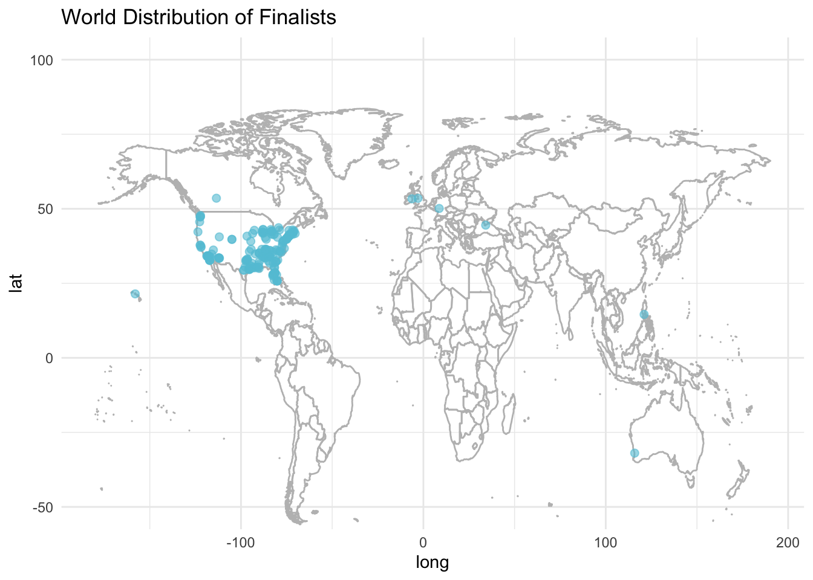

ggplot(ratings, aes(x = airdate, y = viewers_in_millions)) +geom_point(color ="#63C5DA") +scale_x_date(labels = scales::date_format("%Y"), breaks ="1 year") +labs(x ="Airdate", y ="Viewers (in millions)", title ="Viewers Over Time") +theme(axis.text.x =element_text(angle =45, hjust =1))
Warning: Removed 42 rows containing missing values or values outside the scale range
(`geom_point()`).
Code
library(dplyr)
Attaching package: 'dplyr'
The following objects are masked from 'package:stats':
filter, lag
The following objects are masked from 'package:base':
intersect, setdiff, setequal, union
Code
library(ggplot2)library(tidyr)judges <-data.frame(season =1:18,judge =c("Paula Abdul, Simon Cowell, Randy Jackson","Paula Abdul, Simon Cowell, Randy Jackson","Paula Abdul, Simon Cowell, Randy Jackson","Paula Abdul, Simon Cowell, Randy Jackson","Paula Abdul, Simon Cowell, Randy Jackson","Paula Abdul, Simon Cowell, Randy Jackson","Paula Abdul, Simon Cowell, Randy Jackson","Paula Abdul, Simon Cowell, Kara DioGuardi, Randy Jackson","Simon Cowell, Ellen DeGeneres, Kara DioGuardi, Randy Jackson","Randy Jackson, Jennifer Lopez, Steven Tyler","Randy Jackson, Jennifer Lopez, Steven Tyler","Randy Jackson, Mariah Carey, Nicki Minaj, Keith Urban","Harry Connick Jr., Jennifer Lopez, Keith Urban","Harry Connick Jr., Jennifer Lopez, Keith Urban","Harry Connick Jr., Jennifer Lopez, Keith Urban","Katy Perry, Luke Bryan, Lionel Richie","Katy Perry, Luke Bryan, Lionel Richie","Katy Perry, Luke Bryan, Lionel Richie" ))ratings <-read.csv("ratings.csv")average_viewers <- ratings |>group_by(season) %>%summarise(avg_viewers =mean(viewers_in_millions, na.rm =TRUE))avg_ratings <-data.frame(season =c(1:13, 15:18),avg_viewers = average_viewers)seasonal_data <-merge(judges, avg_ratings, by ="season")heatmap_data <- seasonal_data |>separate_rows(judge, sep =", ") #Create the heatmapggplot(heatmap_data, aes(x =factor(season), y = judge, fill = avg_viewers.avg_viewers)) +geom_tile(color ="white") +scale_fill_gradient(low ="lightblue", high ="darkblue", name ="Avg Viewers\n(Millions)") +labs(title ="Seasonal Viewership by Judge",x ="Season",y ="Judge" ) +theme_minimal()
filtered_ratings <- ratings |>filter(!is.na(weekrank), weekrank <23)filtered_ratings$weekrank <-factor(filtered_ratings$weekrank, levels =rev(sort(unique(filtered_ratings$weekrank))))# Create the ridgeline plotggplot(filtered_ratings, aes(x = viewers_in_millions, y =factor(weekrank))) +geom_density_ridges(color ="black", fill ="#63C5DA", alpha =0.6) +labs(x ="Viewers (in millions)",y ="Week Rank",title ="Distribution of Viewers by Episode Ranking" ) +theme_minimal()
Picking joint bandwidth of 1.38
Warning: Removed 1 row containing non-finite outside the scale range
(`stat_density_ridges()`).
##Audition Cities
Code
auditions <-read.csv("auditions.csv")ggplot(auditions |>filter(!is.na(tickets_to_hollywood)), aes(x = tickets_to_hollywood, y =reorder(audition_city, tickets_to_hollywood, FUN =function(x) length(x)))) +geom_point(size =3, color ="steelblue") +labs( title ="Tickets to Hollywood by Audition City", x ="Number of Tickets to Hollywood", y ="Audition City" ) +theme_minimal()
Code
library(ggplot2)library(plotly)
Attaching package: 'plotly'
The following object is masked from 'package:ggplot2':
last_plot
The following object is masked from 'package:stats':
filter
The following object is masked from 'package:graphics':
layout
Code
auditions <-read.csv("auditions.csv")auditions_filtered <- auditions |>filter(!is.na(tickets_to_hollywood)) |>mutate( Q1 =quantile(tickets_to_hollywood, 0.25), Q3 =quantile(tickets_to_hollywood, 0.75), IQR = Q3 - Q1 ) |>filter( tickets_to_hollywood >= (Q1 -1.5* IQR) & tickets_to_hollywood <= (Q3 +1.5* IQR)) |>select(-Q1, -Q3, -IQR)ggplot_object <-ggplot(auditions_filtered, aes(x = tickets_to_hollywood, y =reorder(audition_city, tickets_to_hollywood, FUN =function(x) length(x)))) +geom_point(size =1, color ="steelblue") +facet_wrap(~ season, scales ="free_y", ncol=1, labeller =labeller(season =function(x) paste("Season", x))) +labs( title ="Tickets to Hollywood by Audition City", x ="Number of Tickets to Hollywood", y ="Audition City" ) +theme_minimal() +theme(plot.margin =margin(t =10, r =10, b =10, l =20),strip.text =element_text(size =10, face ="bold"),axis.text.y =element_text(size =5, margin =margin(r =10), lineheight =2), axis.text.x =element_text(size =9) ) ggplotly(ggplot_object, height =1500)
Passing 163 addresses to the Nominatim single address geocoder
Query completed in: 166 seconds
Code
ggplot() +geom_map(data = world_map, map = world_map, aes(x = long, y = lat, map_id = region, group = group), fill ="white", color ="gray",alpha=0.3) +geom_point(data = finalists_geocoded, aes(x = long, y = lat), color ="#63C5DA", alpha =0.6, size =2) +theme_minimal() +ylim(-50,100)+ggtitle("World Distribution of Finalists")
Warning in geom_map(data = world_map, map = world_map, aes(x = long, y = lat, :
Ignoring unknown aesthetics: x and y
Warning: Removed 7 rows containing missing values or values outside the scale range
(`geom_point()`).

Code
usa_map <-filter(world_map,region=="USA")usa_finalists <-filter(finalists_geocoded, long <-50, lat >0)ggplot() +geom_map(data = usa_map, map = usa_map, aes(x = long, y = lat, map_id = region, group = group), fill ="white", color ="black") +geom_point(data = usa_finalists, aes(x = long, y = lat), color ="#63C5DA", alpha =0.6, size =2) +theme_minimal() +coord_fixed(ratio=1.2)+xlim(-130,-60)+ylim(25,50)+ggtitle("USA Distribution of Finalists")
Warning in geom_map(data = usa_map, map = usa_map, aes(x = long, y = lat, :
Ignoring unknown aesthetics: x and y
Warning: Removed 2 rows containing missing values or values outside the scale range
(`geom_point()`).
##Age and Gender
Code
elim <-read.csv("elimination_chart.csv")elim_cleaned <- elim |>filter(!is.na(gender) &!is.na(season))ggplot(elim_cleaned, aes(x=gender))+geom_bar(fill="#63C5DA",color="black")+facet_wrap(~ season,scales="free_x",labeller =labeller(season =function(x) paste("Season", x)))+labs(title ="Gender Distribution by Season", x ="Gender", y="Count")+theme_minimal()
Code
filtered_gender <- elim_cleaned[elim_cleaned$place ==1, ] ggplot(filtered_gender, aes(x = gender)) +geom_bar(fill="#63C5DA",color="black") +labs(title ="Gender Distribution of Winners", x ="Gender", y ="Count") +theme_minimal()